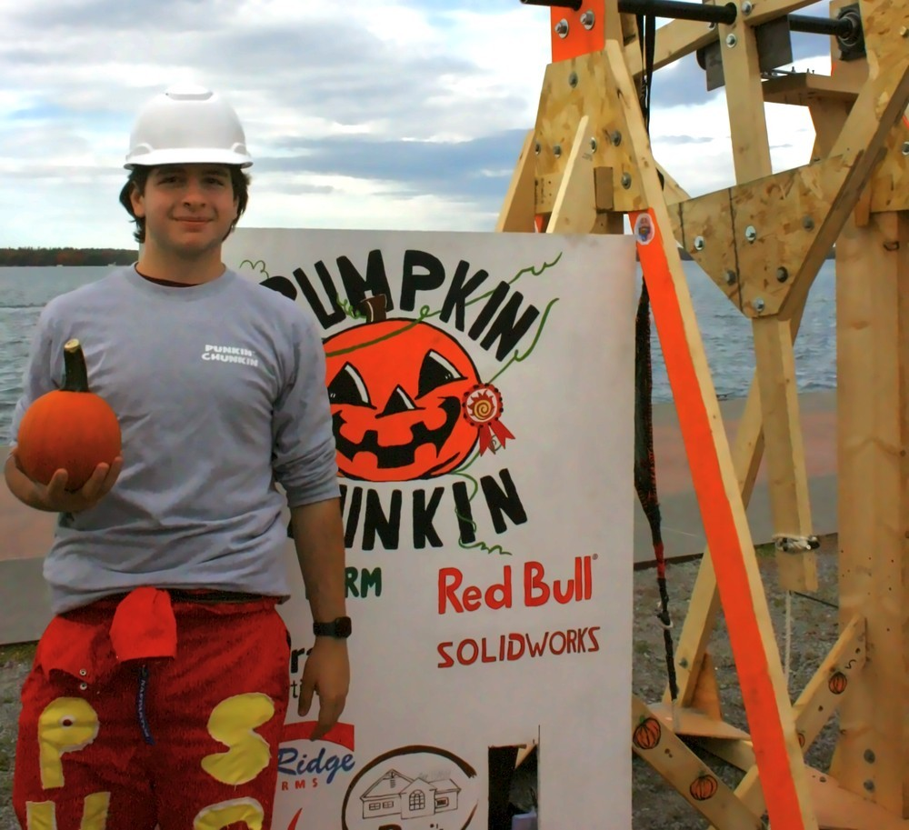
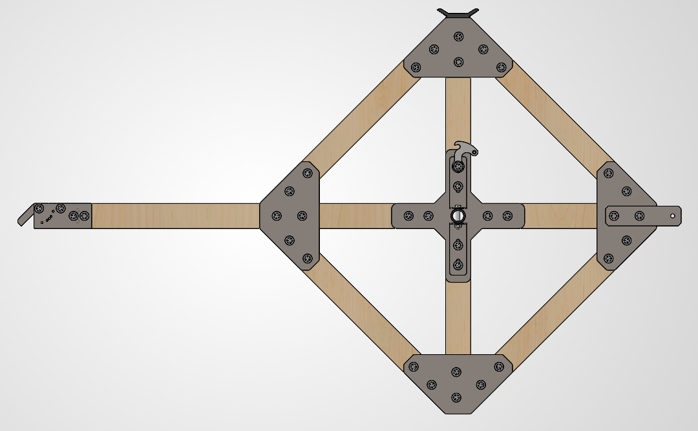
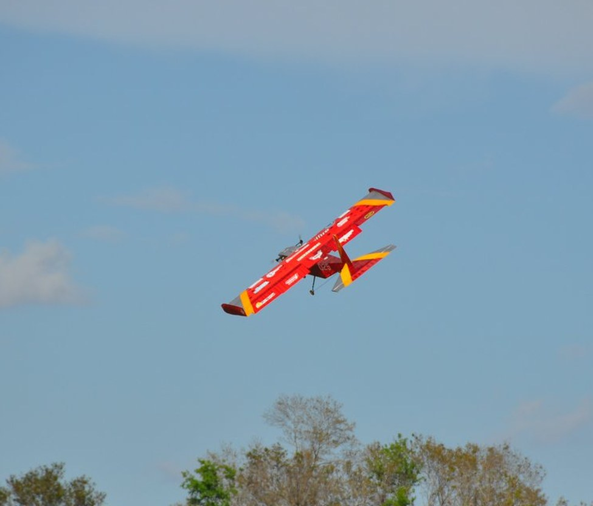
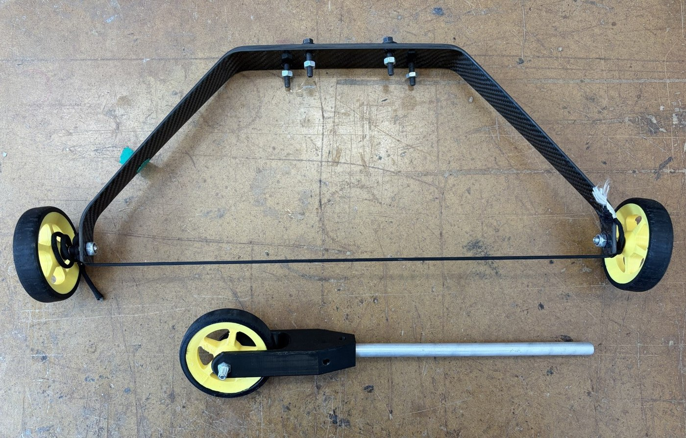
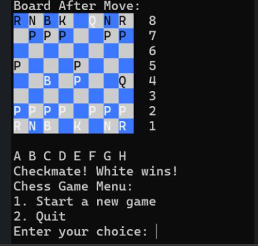
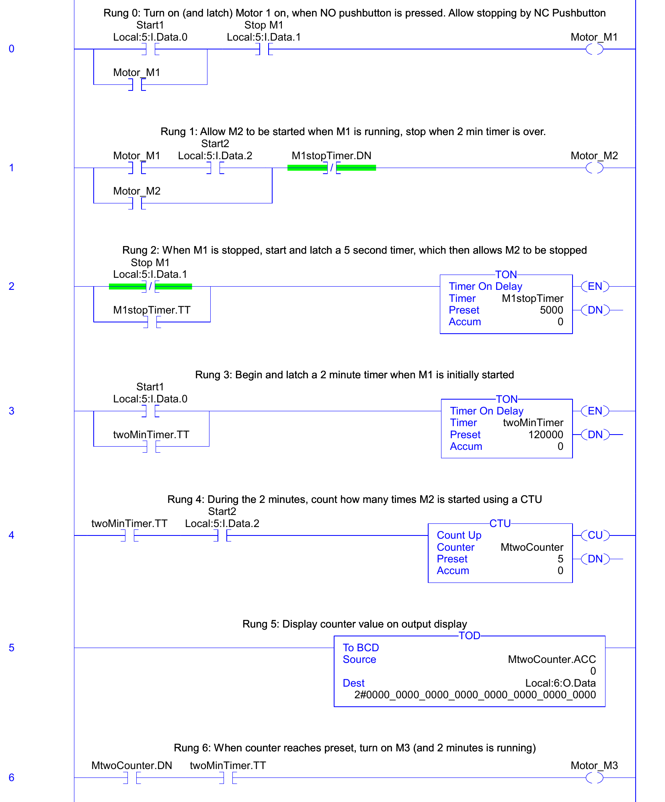
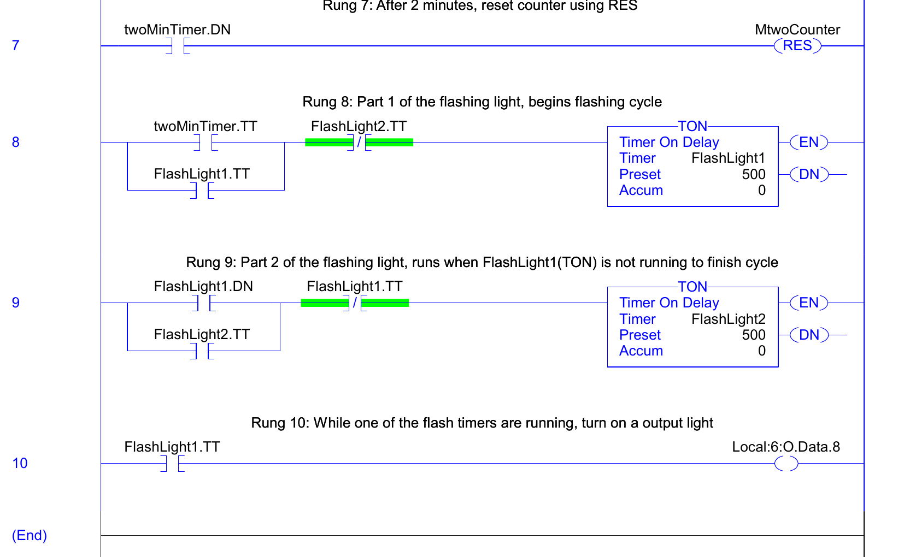
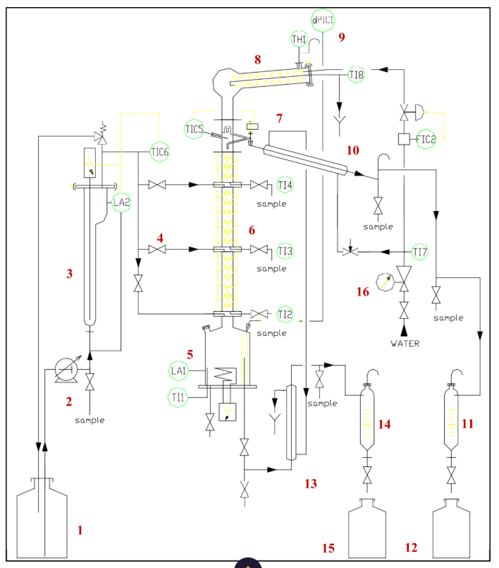
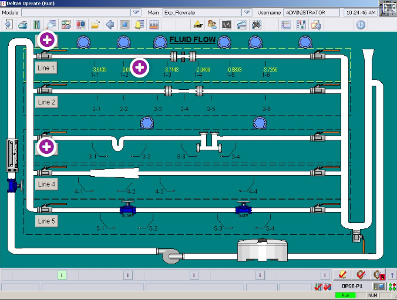

Automation Systems Engineering, McMaster University
Franco Di Natale
B.Tech at McMaster University, concurrently completing an Advanced Diploma in Chemical Engineering Technology through Mohawk College. I work across mechanical design, controls, and fabrication.

Automation Systems Engineering combines mechanical design, controls, and manufacturing systems, with a strong lab and hands-on project component. Alongside it, I'm completing an Advanced Diploma in Chemical Engineering Technology through Mohawk College, giving me coursework spanning mechanical fundamentals, PLC-based automation, process engineering, and fabrication. What draws me to the field is that gap between designing something and getting it to actually perform under real constraints — every project below started as a CAD model and ended up getting tested, broken, and rebuilt until it worked.
Featured Projects
click to expandFIG. 01 — Launch test, 2025

FIG. 02 — Flywheel assembly, isolated CAD view, 2026
- Worked from a single reference video with no other documentation available; core mechanics had to be reverse-engineered and validated through iterative prototyping and testing.
- Designed a ~140 cm, ~50 lb flywheel structure around standard 2×4 lumber, revising geometry and brackets to cut cost and improve stability.
- Diagnosed a failure in the spring-loaded actuator during final testing and redesigned it from aluminum to steel with a neutral-return spring the night before competition, then ran the full event without a single issue.
- Powered the flywheel with a bicycle drivetrain and custom gear ratios, human-powered rather than motor-driven — the only launcher in the competition built this way.


FIG. 01 — Competition aircraft in flight
FIG. 02 — Landing gear assembly
- Placed 11th out of 35 universities from around the world at competition.
- Developed a quick-release payload retention system removable in ~40 seconds, well within the 60-second competition limit.
- Co-developed a drop-test rig to validate a landing-gear redesign that reduced weight compared to the previous year's design.
- Selected a fill-material configuration for the payload bottles that met volume requirements while preventing internal movement.
- Built an Excel mass-budgeting tool to compare payload layouts across configurations.
- Contributed to a ~50-page SAE Aero Design technical report, rationalizing every design decision against alternatives, constraints, and test results for formal submission.

FIG. 01 — Terminal output, checkmate detection
- Co-developed a two-player chess engine with a partner in object-oriented C++, structuring piece behavior through inheritance with full move validation, turn handling, pawn promotion, and checkmate detection.
- Built a color-coded Unicode board interface for terminal play.
- Selected by the professor as the best project of the term and awarded a bonus grade.
Experience
click to expandPROFESSIONAL EXPERIENCE
- Drove equipment and workflow improvements during ramp-up of a new wood door manufacturing operation, contributing to a ~70% increase in peak output.
- Optimized glue-spreader feed speed and roller gap, doubling throughput and cutting glue refills from 3+ to 1 per batch.
- Investigated warping, bond failures, and telegraphing through controlled test builds, varying glue paste, press cycle time, and setup; inspected failure patterns to refine production settings.
- Diagnosed and corrected CNC sensor and cutting-alignment issues, restoring normal process speed and avoiding a major production delay ahead of a next-day customer shipment.
- Measured, cut, formed, and installed aluminum soffit and fascia independently across five residential renovation projects.
- Translated field measurements into custom part geometry, fabricating components on a sheet-metal brake, circular saw, and snips.
- Diagnosed a recurring flooding issue and redesigned the downspout discharge path to resolve it.
- Took on independent fabrication of non-standard components after demonstrating consistent accuracy on standard installs.
LABS & COURSEWORK


- Programmed and tested ladder-logic control systems on Allen-Bradley PLC trainers for traffic-control, tank-level, and detection exercises.
- Developed start/stop seal circuits, interlocks, timers, counters, and program-flow routines.
- Interfaced PLC I/O with 7-segment displays and thumbwheel switches using BCD conversion.


- Operated lab process equipment across dosing-pump, precipitation, filter-press, fluid-flow, and distillation experiments.
- Measured pressure, temperature, and flow; quantified loss coefficients against theoretical values.
- Processed large experimental datasets in Excel, using formulas to repeat calculations across datasets and building dynamic charts, then produced formal technical reports analyzing the results and quantifying uncertainty.
Technical Skills
CAD & Design
SolidWorks (parts, assemblies, manufacturing drawings), AutoCAD, design for manufacturability, BOM development
Controls & Automation
RSLogix 5000, Ladder Logic, Allen-Bradley PLCs, discrete I/O, hardware wiring & troubleshooting
Programming
C++, object-oriented programming, debugging, command-line application development
Manufacturing & Fabrication
CNC operation, machine setup & calibration, sheet-metal fabrication, component assembly, quality inspection
Testing & Analysis
Mass budgeting, process optimization, prototype testing, failure analysis, technical documentation
Contact
Open to co-op and internship opportunities across engineering disciplines.